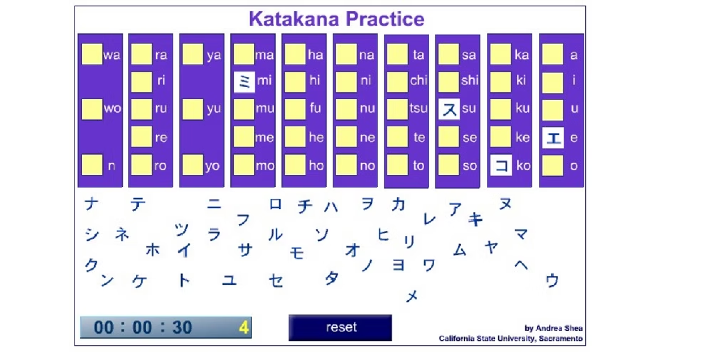
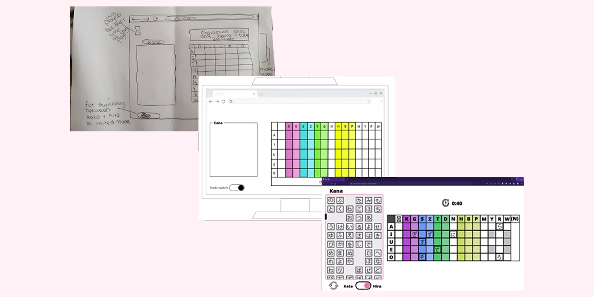

Hipparu - My (first) Experience designing UI For a Web Application
Overview
During the Summer, I was exploring what courses would be available to me after my level 3 Art and Design course. One subject piqued my interest: Interaction Design. This appealed to me as it seemed like a course which would involve logical thinking and problem solving, I liked the idea of making a web page or app as user friendly and functional as possible. After reading about the open source software and the community surrounding it, I saw this as a way to get involved with the community and see what opportunities were available to me. After exploring a few different forums, I found a developer who wanted to redesign an old Adobe Flash game. I learned what Flash was - an outdated standard for interactive Web content. The application the developer wanted to redesign was a Japanese learning tool.

After viewing the Flash game, I worked with the developer. Initially requirements were discussed, and a simple goal of making a single application for desktop browsers was decided on. I then made rough sketches of how the pages may look and interact with each other, incorporating feedback and iterating on it early on with simple tools. This included the home page which would give you the option of what game mode you wanted to play in, rather than being two separate applications like the Flash games, and introducing a mixed mode where players could combine the two games. Doing these sketches was a good way to gather a more solid idea of what the developer wanted before starting the wireframes. The next stage of the process was to make slightly more detailed wireframes. Using Mockflow I made more detailed designs of what I had in mind for the game. This was simple to use and would give me a good idea of how to lay out elements proportionally. The developer had also told me that they wanted the game to have a light and dark mode option and wireframing was the useful way to experiment with colour schemes before finalising them in Photoshop. We had 3 modes: Katakana, Hiragana and Mixed. This meant that while I was designing for the Hiragana and Katakana mode, I had to keep in mind that there was to be a switch for the mixed mode. Once I had iterated on it a few more times with the developer, it was time to create a more detailed finalised design in Photoshop.
While I had some limited experience with Photoshop before, I hadn’t used it for this type of application before. This came with its own learning curve but with my experience and the help of a few tutorials I was able to get the hang of it. Using Photoshop I could make a design that would be very close to the finished product. I would regularly meet with the developer before iterating on it again.
While I initially looked for public photos of cherry blossoms that could be used as a background for the game, I eventually decided to create my own to avoid copyright issues. While I was researching material to help me learn useful conventions, I came across material.io. I came across several design patterns that would end up being useful for me, especially regarding colour choice. I had chosen maximum black for my dark mode background, but discovered that material.io recommended a dark grey. With some experimenting I found that this was much better on the eye.

Final Thoughts
Overall I quite enjoyed the process of watching the initial rough sketches develop into a more refined final product, and being able to liaise with the developer and get structured feedback when necessary. I think the most difficult part of the process for me was trying to use photoshop for an application like this but through following relevant tutorials and my own trial and error I think I got a grip of it quite quickly. Mockflow was one of my favourite parts of the process as the amount of tools and elements available to be allowed me to get a greater understanding of how the game would function.